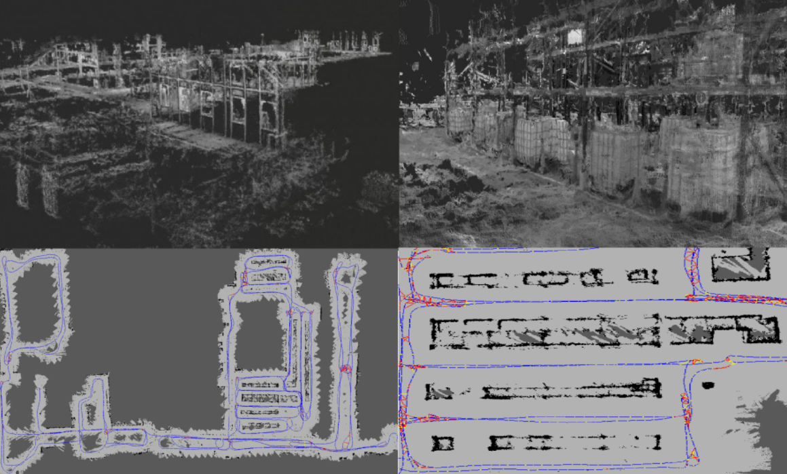
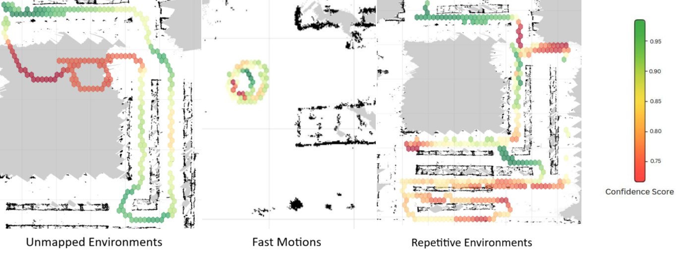
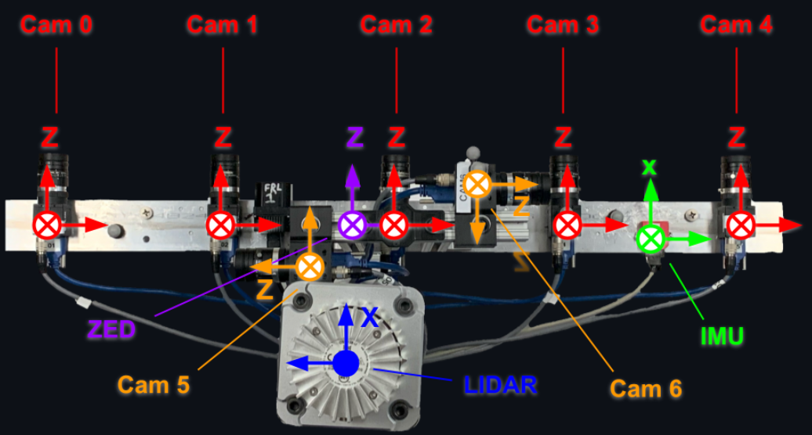
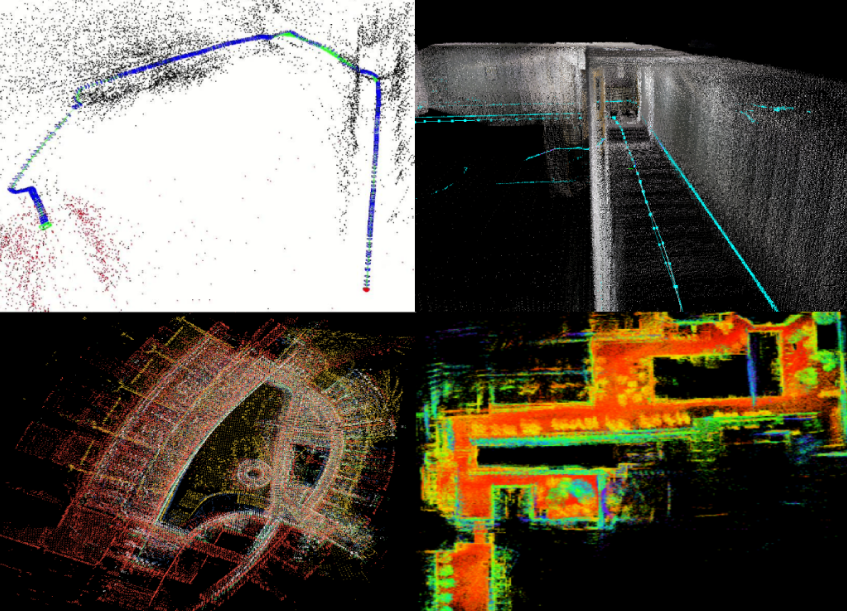

01. Experience
Robotics Software Engineer Intern
[PROBLEM STATEMENT]
How would an Autonomous Forklift know where a package is supposed to be stored in a warehouse?
GPS is denied indoors. Standard odometry drifts significantly on repetitive warehouse floors.
We needed sub-30cm accuracy for efficient forklift navigation
but at a fraction of the cost of expensive LiDAR based packages.
[SOLUTION ENGINEERED]
Built Vaux Vision: RTLS — a custom Camera-based Localization System.
We executed the open-source SLAM package: RTAB-Map (Visual-Inertial SLAM)
in easy to deploy Docker containers to handle the repetitive scenery. We optimized the pipeline
to make it robust enough to tackle dynamic and repetitive environments.
Since warehouse environments are ever changing, we implemented dynamic 2D and 3D mapping buy overwriting
the map wherever new scenes and features are detected.
Warehouses are huge (ours was around 300,000 sqft), yet we were able to generate the detailed
3D and 2D map of the entire warehouse using efficient memory management, robust re-localization and high speen in under 1 hour.
[RESULTS ACHIEVED]
Succeded in having sub-10 cm accuracy for precise navigation and localization.
Implemented dynamic mapping while using less than 50% compute power.
Reached forklift operation speeds of above 10 mph during mapping and localization.
Achieved 95% relocalization confidence in diverse warehouse environments.



Robotics Research Assistant
[THE MOTIVATION]
Whenever any major SLAM related algorithm is developed, it is benchmarked on the world renowned EuRoC and KITTI datasets. We wanted to
create our own research level, benchmark capable dataset that will be used in the industry.
[EXPERIMENTAL SETUP]
Started by making the universal setup rig that could be mounted on all different types of robots.
It included IMUs, Stereo Camera pair, Velodyne LiDAR, GNSS GPS running on a Nvidia
Jetson Orin NX.
We performed IMU calibraion, multi-camera intrinsic and extrinsic calibration, LiDAR spatio-temporal
calibration along with time-syncing all sensors to have a unified data stream.
We used the Boston Dynamics SPOT, Unitree Go2, Unitree B2-W robots and RC cars to perform data collection
ensuring different quality of data resulting from different moving patterns of each robots.
[FINDINGS]
Benchmarked the ORB-SLAM 3, RTAB-Map visual SLAM and Fast-LIO 2,
LIO-SAM LiDAR based SLAM algorithms on the collected dataset.
Performed detailed comparitive analysis, identifying strengths and limitations by analysing trajectory errors,
drift rate and runtime computation metrics.
Mapped 15 Acres of Northeastern University campus.

